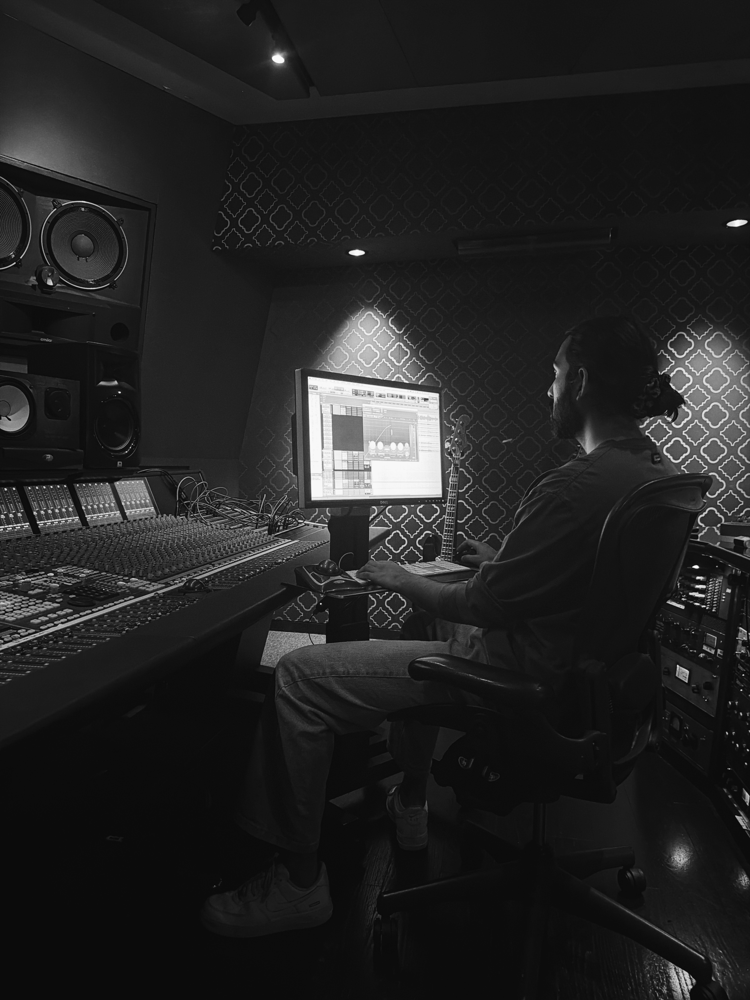
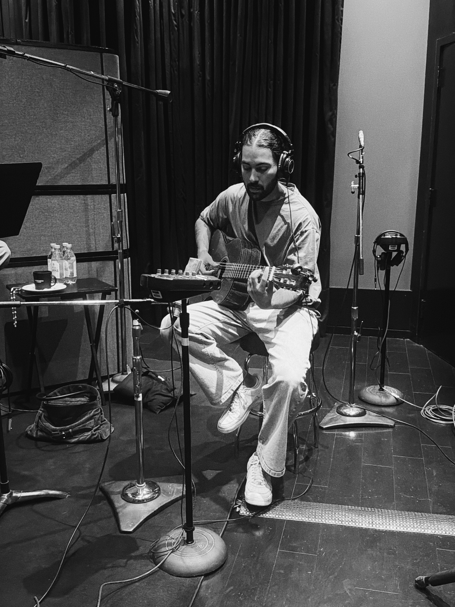

Archit Anand
Along Came You
This Too Shall Pass
Dreaming
Breathe
Trust the process
Producer · Engineer · Mixer
Records, singles and releases.


Original score, soundtrack and music work.


Live sound, performance and event work.
Original music for advertising.


Ananda Dhar-James is a Los Angeles-based producer, engineer and musician, and a lead recording engineer at Larrabee Studios. His work spans records, film, television and live music, with sessions for artists including Rosalía, Roddy Ricch, Miguel, Marshmello and Gunna.
His background as a guitarist and multi-instrumentalist informs an approach that moves naturally between production, recording and mixing.